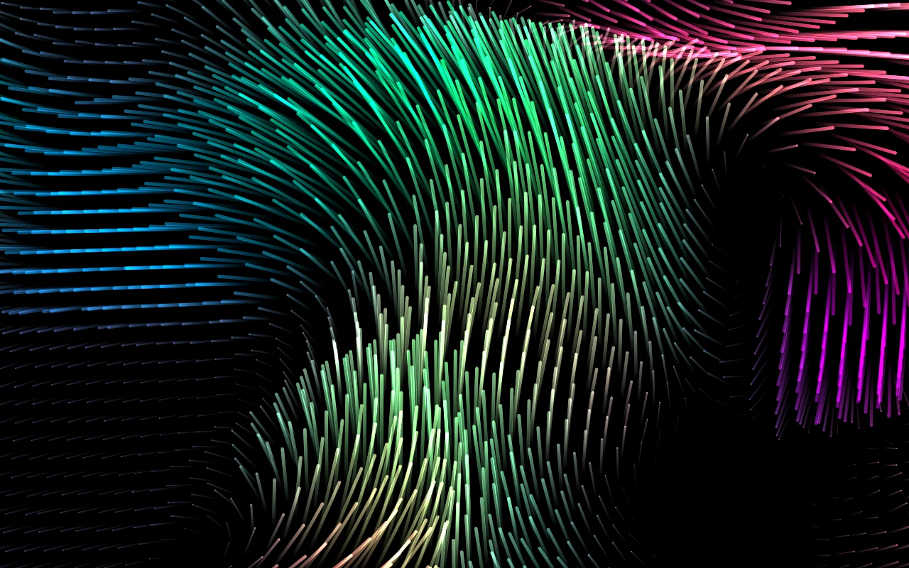

Solo il movimento.
Schermo intero, cursore nascosto. Nessuno slogan, nessuna informazione sovrapposta. Muovi il mouse o premi un tasto per tornare al desktop.
Drift / Deriva, ora su Linux.
Linee che si inseguono. Colori che cambiano. Un salvaschermo nativo che lascia parlare soltanto il movimento.

UN MOMENTO DI CALMA
Dieci palette incluse, oppure i colori di una tua immagine. Queste sono catture reali del salvaschermo.
E poi Gumdrop, Silver, Charcoal, Glitter, Andromeda, Verdant e Freedom. Tutte già dentro l'app.
SEMPLICE, COME DOVREBBE ESSERE
Un'applicazione Linux installabile.
Apri, personalizza, lascia scorrere.
Schermo intero, cursore nascosto. Nessuno slogan, nessuna informazione sovrapposta. Muovi il mouse o premi un tasto per tornare al desktop.
Palette, linee, fluidità, scala e rumore. Con --config provi le modifiche in anteprima e le salvi nella tua configurazione utente.
Animazione, palette e impostazioni funzionano senza Internet. X11 e Wayland vengono rilevati automaticamente. Nessun account richiesto.
PRONTO IN POCHI COMANDI
Scarica il pacchetto, installalo e apri le impostazioni. Troverai LinuxDrift anche nel menu delle applicazioni.
Release, checksum e sorgenti# Nella cartella del pacchetto scaricato
sudo apt install ./linuxdrift_1.0.1_amd64.deb
# Scegli la tua atmosfera
linuxdrift --config
# Avvia il salvaschermo
linuxdriftIl pacchetto dichiara le dipendenze e apt le installa se mancanti. Internet serve soltanto per scaricare il pacchetto ed eventuali dipendenze. Per altri sistemi e architetture, consulta le istruzioni di compilazione.
A CASA NEL TUO DESKTOP
Su X11, LinuxDrift compare in xscreensaver-demo con anteprima incorporata e opzioni. Il gestore si occupa dell'inattività e del blocco; tu scegli il salvaschermo.
Su Wayland l'animazione funziona nativamente. Per l'avvio dopo inattività e il blocco della sessione, usa il gestore del tuo desktop. LinuxDrift, da solo, non è un blocco schermo.
Come configurare XScreenSaverVersione 1.0.1 · Licenza MIT · Fatto per Linux